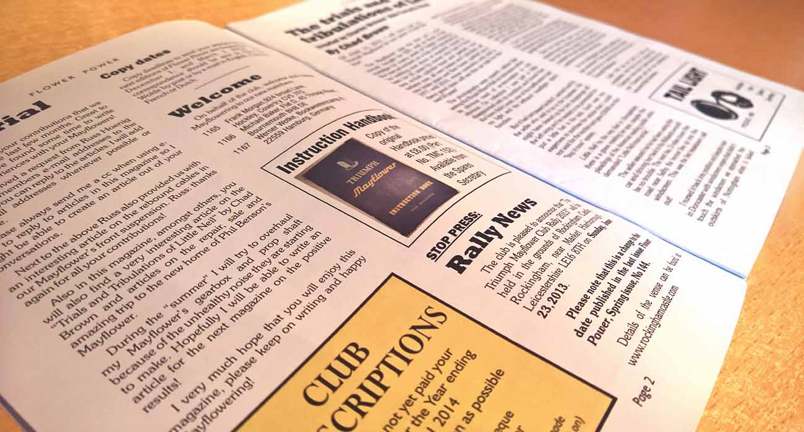

Documents
Technical documentation
In many ways this is where the ‘Holy Grail’ of restoration can be found. This section has copies of all available technical manuals and articles concerning the Triumph Mayflower, from the humble instruction book telling owners “what knob does what”, to more detailed manuals allowing the restorer or maintainer to undertake processes such as an engine re-build.
Flower Power archive
Flower Power is the periodical of the Triumph Mayflower Club. It is open for all members to contribute content to and is another forum for communication between members. This section aspires to include all issues ever published by the TMC over time.
Annual general meetings
This section contains PDFs of recent AGM minutes, the agenda of forthcoming AGMs (when available) and we’ll gradually backfill all historical minutes as and when we manage to track them down. The club AGM is usually held around March time – we’ll publish details of the next AGM (including the agenda) on this page too.